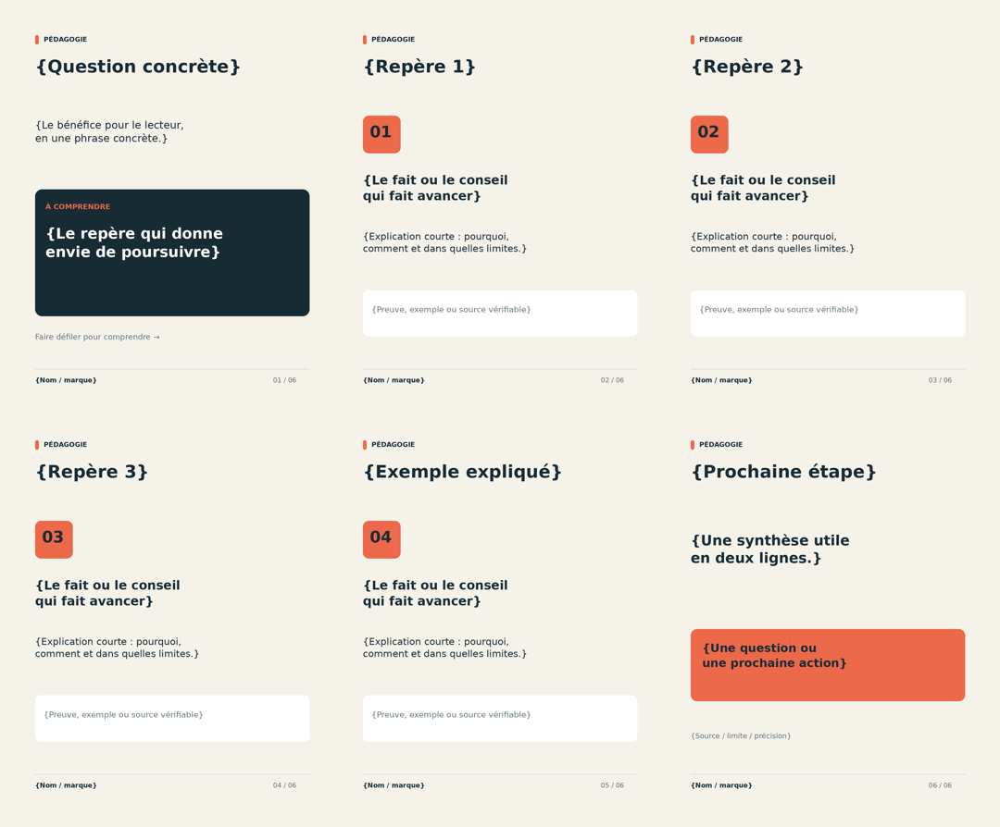
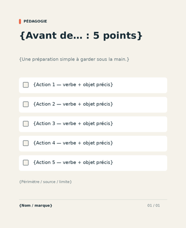
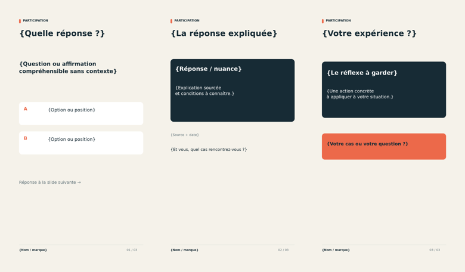
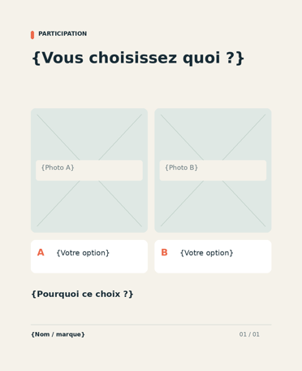
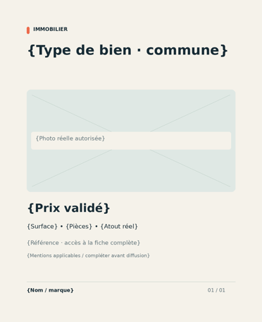
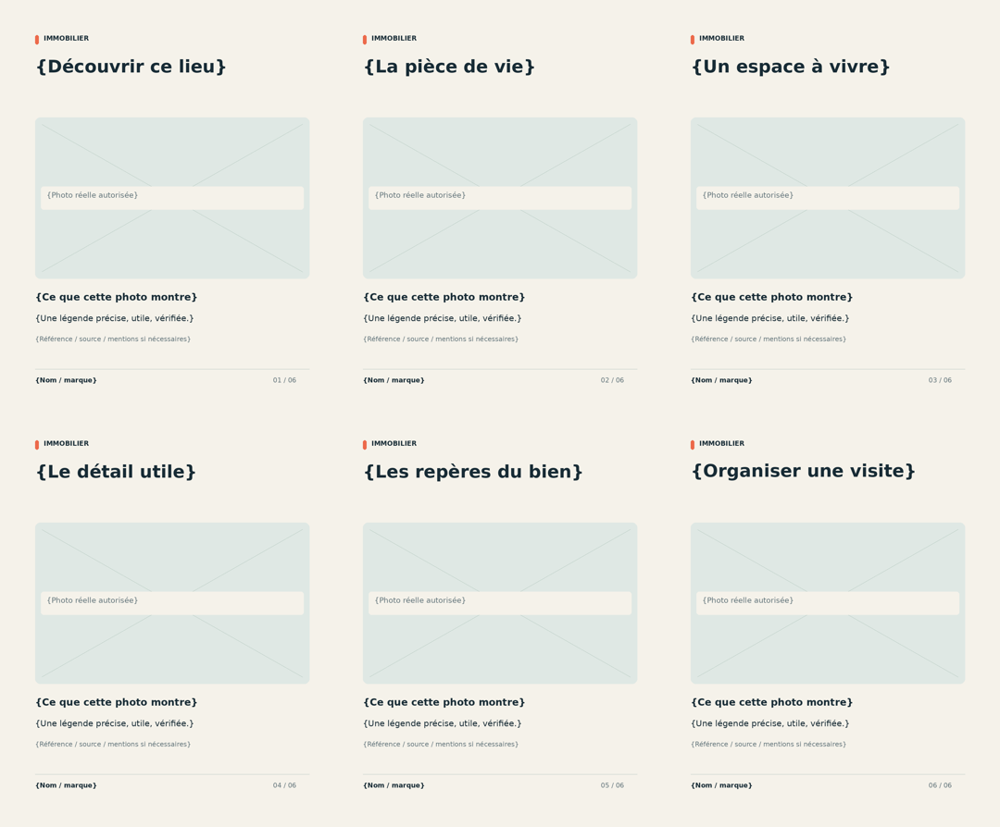
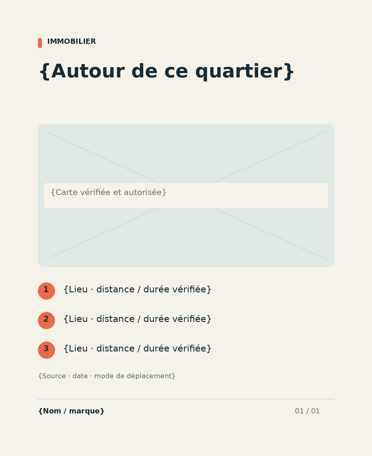
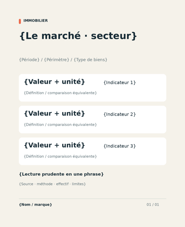
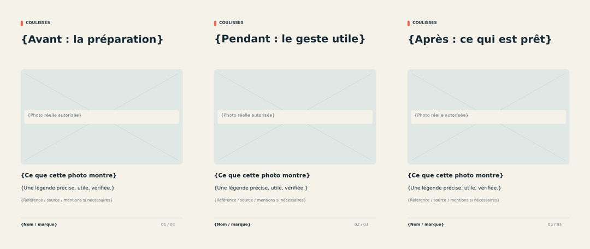

M001 · Carrousel pédagogique

Dérouler une idée utile, une étape par écran, puis proposer une action.
Sources SVG + aperçus + mode d’emploi16 familles originales · 38 compositions SVG modifiables · version 1
Ces sources complètent les 52 concepts de référence dans Notion. Les accolades sont des champs à remplacer ; les aperçus ne sont pas des publications finalisées.

Dérouler une idée utile, une étape par écran, puis proposer une action.
Sources SVG + aperçus + mode d’emploi
Transformer un conseil en vérifications concrètes que le lecteur peut conserver.
Sources SVG + aperçus + mode d’emploi
Poser une question précise, révéler une réponse sourcée et ouvrir la discussion.
Sources SVG + aperçus + mode d’emploi
Mettre deux options de même niveau en regard pour recueillir des préférences.
Sources SVG + aperçus + mode d’emploiOrienter vers deux prochaines actions selon une condition simple.
Sources SVG + aperçus + mode d’emploiExaminer une affirmation puis expliquer la nuance et l’action utile.
Sources SVG + aperçus + mode d’emploi
Réunir une photo authentique, les caractéristiques clés et une suite claire.
Sources SVG + aperçus + mode d’emploi
Faire visiter un lieu à travers une séquence de photos réelles et légendées.
Sources SVG + aperçus + mode d’emploi
Associer une carte utilisable et trois repères locaux vérifiés.
Sources SVG + aperçus + mode d’emploi
Présenter trois indicateurs comparables avec période, périmètre et lecture prudente.
Sources SVG + aperçus + mode d’emploiRaconter contexte, actions et résultat documenté avec ses limites.
Sources SVG + aperçus + mode d’emploiDonner un visage réel à une compétence, avec une preuve concrète et une ouverture.
Sources SVG + aperçus + mode d’emploiMontrer quatre étapes de collaboration et le livrable utile à chaque étape.
Sources SVG + aperçus + mode d’emploi
Rendre visible un travail réel par trois photos et trois légendes factuelles.
Sources SVG + aperçus + mode d’emploiRendre la promesse du contenu lisible en une image fidèle à la vidéo.
Sources SVG + aperçus + mode d’emploiFaire comprendre le bénéfice, le lieu, la date et la façon de participer.
Sources SVG + aperçus + mode d’emploi